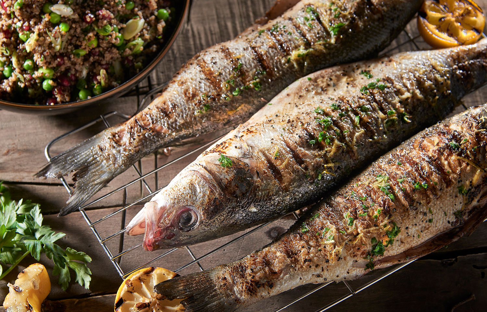
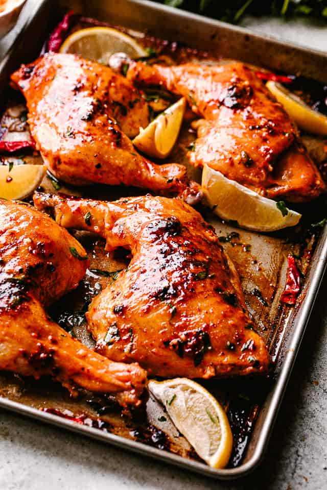
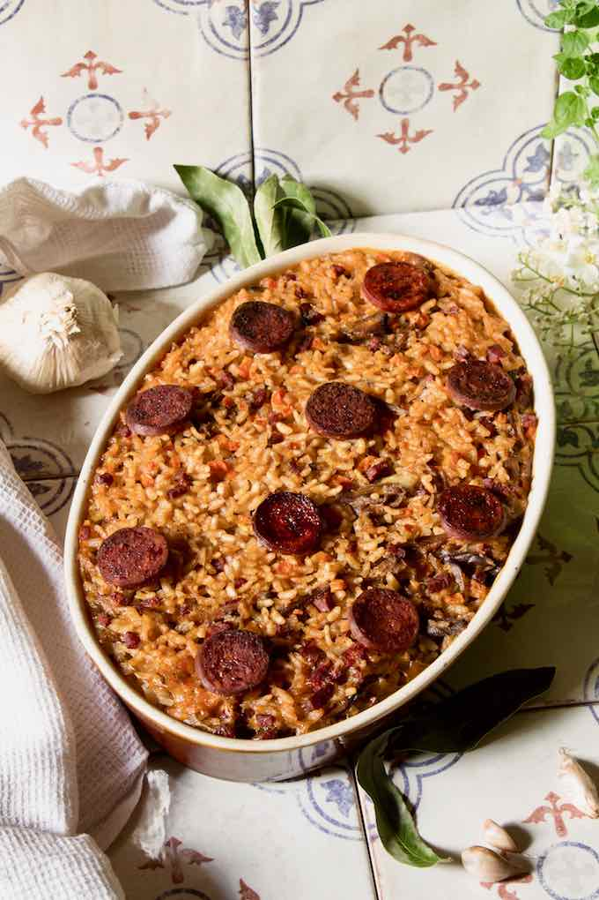

Mains
Döner and Iskender

Ingredients
- 500g RibEye
- 1 Glass Milk
- 1 Teaspoon Honey
- 1 Medium onion
- 4 Gloves of Garlic
- 2 Teaspoon Olive Oil
- 1 Teaspoon Black Pepper
- 1 Teaspoon Salt
Recipe
- Cut pita into small squares and lightly fry with 1 tablespoon of butter.
- In another pan, roast the meat doner kebabs with 1 tablespoon of butter for 4 minutes.
- In a saucepot, simmer 1.5 cups of tomato juice and 1 tablespoon of butter until it thickens and boils.
- Place the toasted bread on a serving plate. Top it with the roasted doner kebabs.
- Pour the tomato sauce over the doner kebabs.
- In a separate pan, fry 2 tablespoons of butter, then drizzle it over the dish.
Köfte

Ingredients
- 500g ground meat
- 1 medium Onion
- 1 clove of Garlic
- 1 Egg
- Half a tea glass of breadcrumbs
- 1 tablespoon of Oil
- 1 handful of finely chopped Parsley
- 1.5 teaspoons of Salt
- Half a teaspoon of Black Pepper
- 1 teaspoon Cumin
Recipe
- Combine minced meat, grated onion, chopped garlic, egg, bread crumbs, oil, parsley, salt, black pepper, and cumin in a mixing bowl. Knead until well mixed.
- Cover the mixture with plastic wrap and refrigerate for about 30 minutes./li>
- Add Pepper and Salt.
- After refrigerating, shape the mixture into meatballs by tearing off pieces with your hands. Oval shape works, but any shape is fine as long as they are thin.
- lace the shaped meatballs on a plate. You can let them rest at this stage if you like.
- Heat oil in a pan on the stove.
- Cook the meatballs by turning them on both sides in the heated pan.
Manti

Ingredients
- 3 water glass Fame
- 1 water glass warm water
- 1 piece egg
- 1 tea spoon salt
- 250 -gram mince
- 1 tea spoon salt
- 1 pieces medium size onion
- 1.5 teaspoons of salt
- 1/2 tea spoon black pepper
- 1/2 tea spoon chili pepper
Recipe
- In a deep mixing bowl, combine 3.5 cups of flour and 1 teaspoon of salt.
- Create a well in the center of the flour mixture.
- Add 1 egg into the well and mix.
- Gradually pour in 1 glass of warm water while continuing to mix.
- Knead the dough until it reaches a medium consistency, not too hard or soft.
- Cover the dough with plastic wrap and let it rest.
- While the dough rests, mix 250 grams of lean minced meat, 1 medium-sized onion, 1/2 teaspoon of black pepper, 1 teaspoon of salt, and 1/2 teaspoon of chili pepper in a bowl.
- Place the dough on a floured surface and divide it into 3 equal portions.
- Roll out each portion into thicker sheets with a rolling pin.
- Cut the rolled dough into small squares and place a portion of the minced meat mixture in the center of each square.
Grilled Sea Bass

Ingredients
- Whole Sea bass fillets
- 800g baby potatoes
- 1 garlic clove, crushed
- 5g fresh basil leaves, very finely chopped
- 40ml red wine vinegar
- 2 tbsp extra-virgin olive oil
- 2 roasted peppers
- 1 small onion
Recipe
- Prepare the bbq
- Cut the Sea bass and open it in half, all th way through the spine
- Season with Salt, Pepper, Garlic and Olive Oil
- Roast pepers
- Cook potatos in the meanwhile put the sea bass in the bbq
- Prepare the Salad
- When the Sea Bass is golden is ready to serve
Roasted Chicken

Ingredients
- 1 (2.25 to 2.7kg) roasting chicken
- Salt
- Freshly ground black pepper
- 1 large bunch fresh thyme, plus 20 sprigs
- 1 lemon, halved
- 1 head garlic, cut in half crosswise
- 30g butter, melted
- 1 large yellow onion, thickly sliced
- 4 carrots cut into 5cm chunks
- 1 bulb of fennel, tops removed, and cut into wedges
Recipe
- Preheat the oven to 210°C (Gas mark 7).
- Clean the chicken by removing the giblets and rinsing it inside and out. Remove excess fat and any remaining pin feathers. Pat the chicken dry.
- Add Pepper and Salt.
- Stuff the chicken cavity with thyme, lemon halves, and garlic.
- Brush the outside of the chicken with butter and season it with salt and pepper.
- Roast the chicken for 1 1/2 hours or until the juices run clear when you cut between a leg and thigh.
- Frie Potatos and serve
Duck Rice

Ingredients
- 1 whole duck
- Coriander
- 2 bay leaves
- 1 thyme sprig
- 1 star anise
- 1 leek (green top only, keep the white part for the rice)
- 1 onion, halved
- 1 carrot
- 1 large orange, zested and juiced
- For the rice:
- 2 tbsp olive oil
- 1 onion, sliced
- 1 garlic clove
Recipe
- Place the duck in your largest pan.
- Cover the duck with water.
- Add coriander, bay leaves, thyme, star anise, leek top, onion, carrot, orange zest, and a grinding of black pepper to the pan.
- Put the pan over medium heat and bring it to a boil. Be sure to skim off any scum from the surface.
- Reduce the heat slightly, cover the pan, and simmer for 45 minutes.
- Turn off the heat and let the duck cool in the stock for 15 minutes.
- Drain the stock from the duck, but reserve it for cooking the rice.
- Allow the duck to rest until it's cool enough to handle, then shred the meat away from the bone.